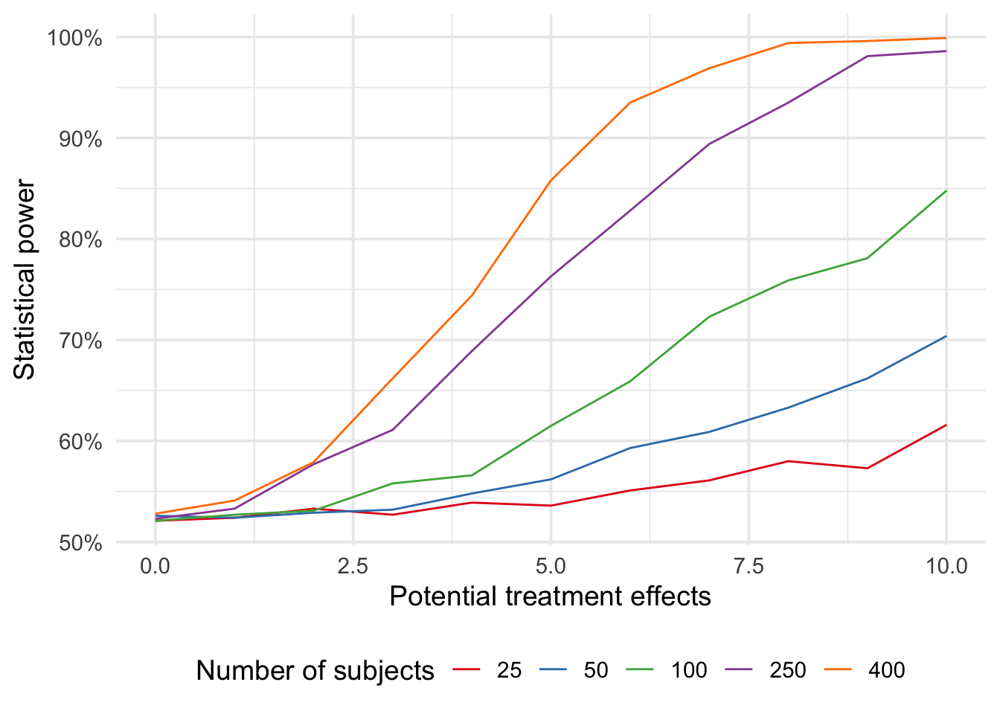
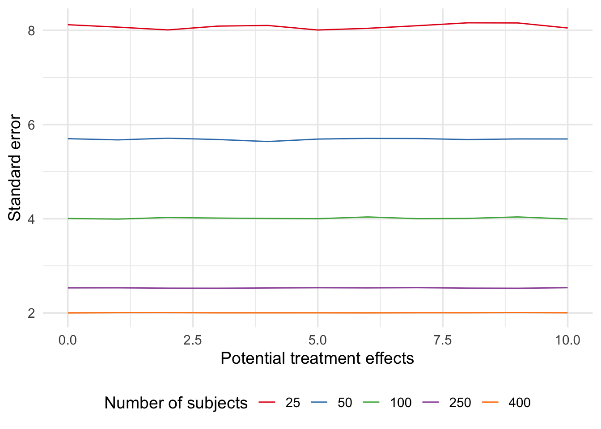

Packages used in this post
library(tidyverse)
library(broom)
library(scales)
library(modelsummary)
theme_set(theme_minimal(base_size = 14))Paw Hansen
September 12, 2023
In my previous post, I showed how you can use simulation to study the properties of different design choices.
In this follow-up post, we’ll expand on those ideas a bit by writing code that will allow us to study several features of the design at once. That is, we’ll simulate data; varying both the number of subjects and the treatment effect size.
We begin with the same function as in my previous post. This will simulate one dataset based on the number of subjects and treatment effect size you provide:
sim_my_data <- function(n_subjects = NULL, treat_effect = NULL) {
y_if_control <- rnorm(n_subjects, 60, 20)
y_if_treatment <- y_if_control + treat_effect
tibble(
condition = sample(x = rep(c("Control", "Treated"), n_subjects/2),
size = n_subjects,
replace = TRUE),
outcome = ifelse(condition == "Control", y_if_control, y_if_treatment)
)
}Now we can iterate that function over several different input values. Let’s say we wanted to study the propteries of our design across the following:
Then, using map2() from the purrr packages, the code would look something like this:
Notice that it takes some time to run - we’re producing 55,000 datasets! If you’re short on time, one option would be to use parallel processing.
With our simulations, we can fit a model to each simulated dataset before using tidy() to extract the information we need:
Finally, we’ll unnest the tidied results so that we can work with them:
Now we are ready to interrogate our design.
Let us use our simulations to calculate the power associated with different numbers of subjects and different treatment effects sizes.
power_rs <-
dat |>
group_by(n_subjects, treat_effect) |>
summarize(power = mean(p.value <= 0.05))
power_rs # A tibble: 55 × 3
# Groups: n_subjects [5]
n_subjects treat_effect power
<dbl> <dbl> <dbl>
1 25 0 0.521
2 25 1 0.524
3 25 2 0.533
4 25 3 0.527
5 25 4 0.539
6 25 5 0.536
7 25 6 0.551
8 25 7 0.561
9 25 8 0.58
10 25 9 0.573
# ℹ 45 more rowsAnd let’s make a plot to see how things behave:
power_rs |>
mutate(n_subjects = as.factor(n_subjects)) |>
ggplot(aes(treat_effect, power)) +
geom_line(aes(color = n_subjects)) +
scale_color_brewer(palette = "Set1") +
scale_y_continuous(labels = percent_format()) +
labs(x = "Potential treatment effects",
y = "Statistical power",
color = "Number of subjects") +
theme(legend.position = "bottom")
We could also compute the standard error of the treatment effects to analyze its variation:
rs <-
dat |>
filter(term == "conditionTreated") |>
group_by(n_subjects, treat_effect) |>
summarize(error = mean(std.error))
rs# A tibble: 55 × 3
# Groups: n_subjects [5]
n_subjects treat_effect error
<dbl> <dbl> <dbl>
1 25 0 8.12
2 25 1 8.07
3 25 2 8.01
4 25 3 8.09
5 25 4 8.11
6 25 5 8.01
7 25 6 8.04
8 25 7 8.10
9 25 8 8.16
10 25 9 8.16
# ℹ 45 more rowsThere is a clear advantage of increasing n but the simulation also reminds us that the standard error does not depend on the treatment effect size:

Final note: When wring up this post, I first tried to simulate data for the case of only 10 subjects. This caused issues with running the code, because with only 10 subjects there is a significant chance that in some of your simulations, all subjects will be either treatment or control. This is not just an annoyance but a useful reminder and a good example of how trying to simulate data will make you aware of issues you had not even considered.
Using simulation is incredibly useful for many things. In this post, I have shown you how you can use simulating to study how assumptions about e.g. the treatment effect will affect your conclusions as well as the consequences of making different design choices (e.g. increasing n).